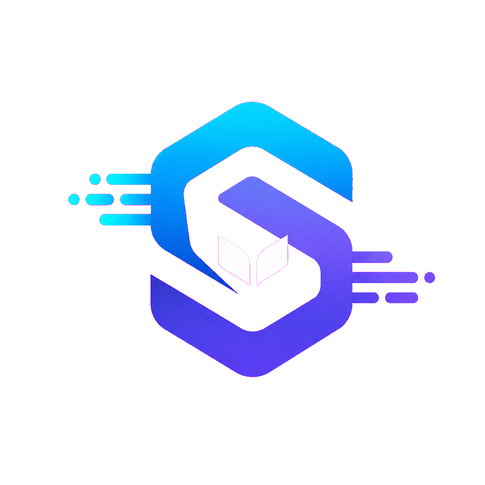

Review
Return to the ideas that matter most—not a generic list of answers.
Practice that turns questions into knowledge.
By ChatGPT Codex + Oli

Designed for elementary and middle school students, SkillSync reinforces classroom topics through review questions and problems students answer themselves.
Return to the ideas that matter most—not a generic list of answers.
Students work through questions and problems using their own thinking.
Feedback shows what is secure, what needs review, and what to try next.
A student asks, receives an answer, and may never discover whether they could solve the next problem independently.
AI works quietly behind the experience—reviewing responses, checking understanding, and tailoring school-focused practice.
SkillSync is still early. Its future depends on making every interaction clearer, smarter, and more useful to young learners.
Improve navigation, accessibility, animation, and classroom-friendly visual clarity.
Make feedback more precise and practice more responsive to each learner’s knowledge gaps.
Help students see what they know, what improved, and where to focus next.
SkillSync turns review into understanding—so students can answer with confidence because they know why.